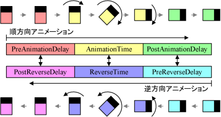

概要
静的な動作カスタマイザのタイミング情報を定義します。
生成規則
static-timing-info ::=
( PreAnimationDelay = float; )opt ( AnimationTime = float; )opt ( PostAnimationDelay = float; )opt ( PreReverseDelay = float; )opt ( ReverseTime = float; )opt ( PostReverseDelay = float; )opt
解説
PreAnimationDelay
スイッチによりこのカスタマイザが有効になってから、実際に動作を始めるまでの遅延時間を秒単位で指定します。デフォルト値は 0.0 です。
AnimationTime
実際の動作に要する時間を秒単位で指定します。0.0 を指定すると一瞬で適用されます。デフォルト値は 0.0 です。
PostAnimationDelay
PreReverseDelay に対応する遅延時間です。他のアニメーションと同期を取るために使用します。デフォルト値は 0.0 です。
PreReverseDelay
カスタマイザが無効になり、元の状態に戻るための逆動作を始めるまでの遅延時間を秒単位で指定します。デフォルト値は PostAnimationDelay の値です。
ReverseTime
カスタマイザが無効になり、元の状態に戻るまでに要する時間を秒単位で指定します。デフォルト値は AnimationTime の値です。
PostReverseDelay
PreAnimationDelay に対応する遅延時間です。他のアニメーションと同期を取るために使用します。デフォルト値は PreAnimationDelay の値です。
よく分からない場合、とりあえず AnimationTime だけを指定すればいいでしょう。逆方向の動作も考慮しつつ他のアニメーションとの同期が外れないようにするためには、上 3 つの値の合計と下 3 つの値の合計を同期する他のアニメーションと共通にし、さらに個々のカスタマイザ内で上 3 つの値の比と下 3 つの値の比を等しくする必要があります。それぞれの値の対応関係は下図のようになります。
